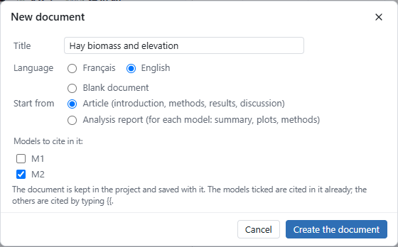
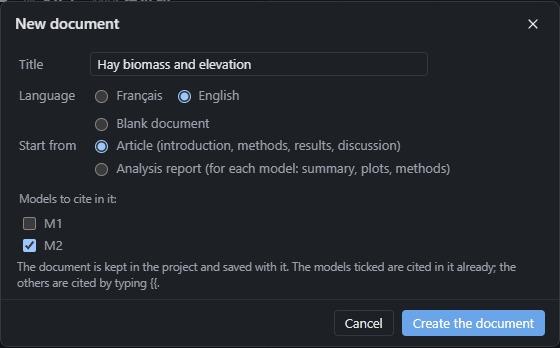
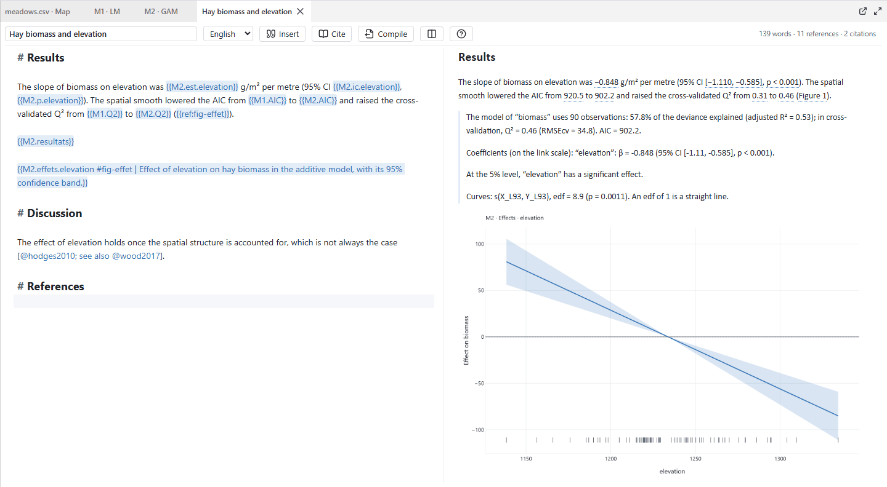
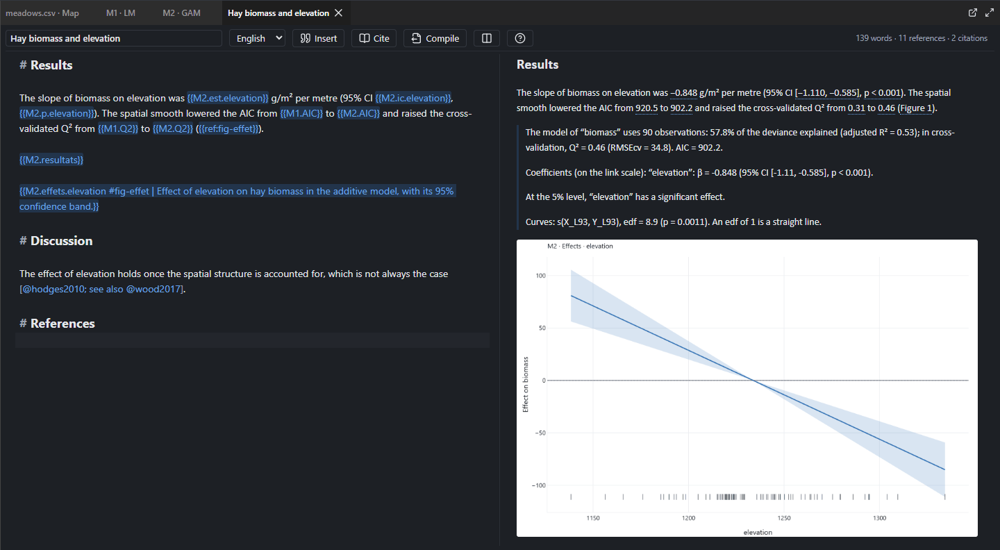
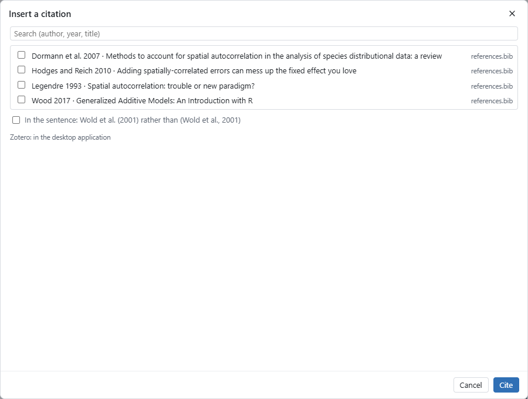
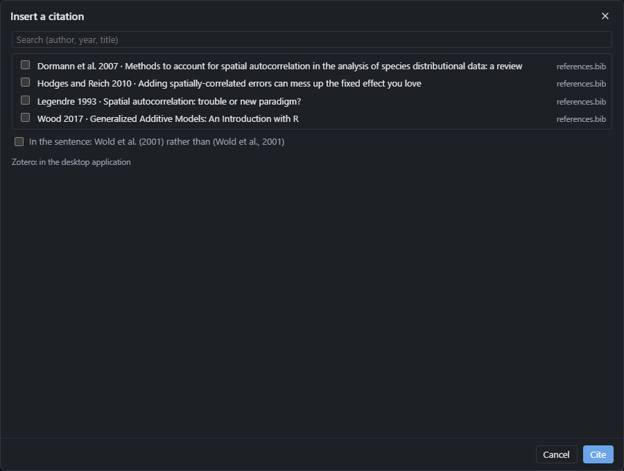
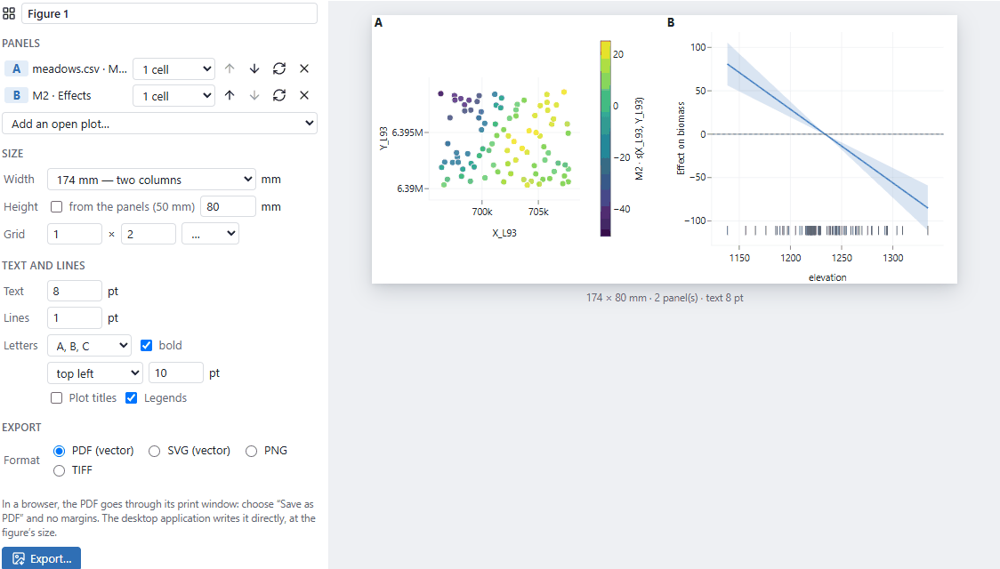
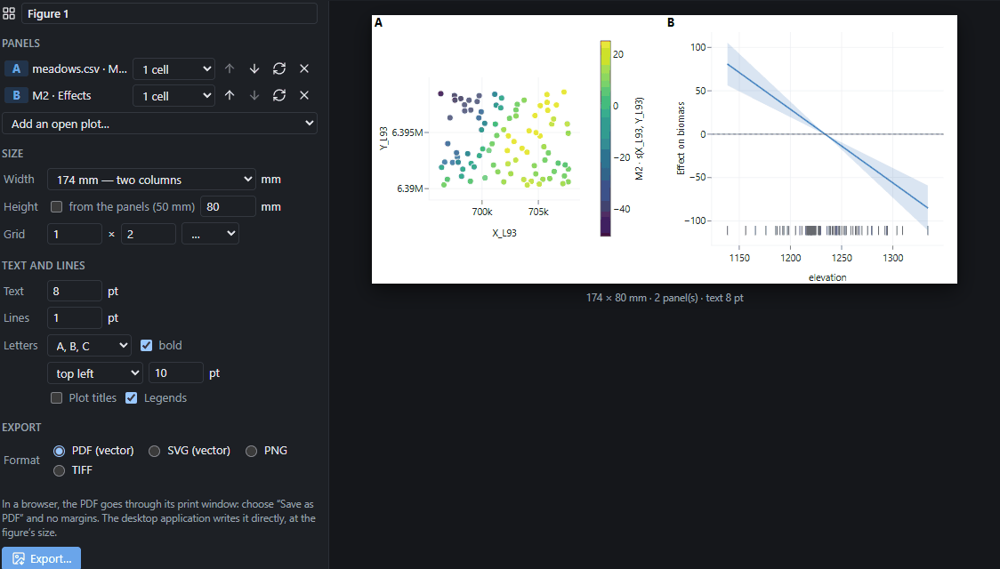
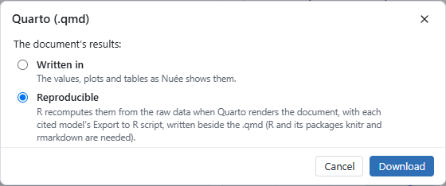
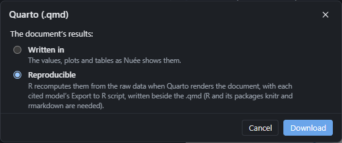

A report, from the models to the paper
The meadows of the maps tutorial written up: values that follow the models, the Methods and Results texts, citations from a BibTeX file, a two-panel figure at a journal's size, Word and PDF, and a Quarto file whose numbers R recomputes.
Before you start. This tutorial writes up the study of the maps tutorial, on its simulated data: the meadows' project with its coordinates, the elevation and its two models, M1 (the linear regression) and M2 (the additive model with a spatial smooth). If you start here, do its steps 1 to 5 first. Then download references.bib into the folder of meadows.csv: four references on spatial autocorrelation and additive models, as Zotero or JabRef export them.
1. A new document
File › New document (or right-click the project in the explorer). Give it a title, choose its language, which sets how numbers are written (0.46 in English, 0,46 in French) and the Methods text's, then start from an Article, with M2 ticked among the models to cite.




Click Create the document. It opens in a tab of its own: the text on the left, in Markdown
(# Title, *italic*, **bold**, lists, tables), and its preview on the right, drawn again as you
type. The article has its headings (Introduction, Materials and methods, Results, Discussion,
References), M2's Methods text, a sentence with two of its values, its Results text and a plot. The
document is kept in the project and saved with it.
2. Citing the results
A model's results are cited between double braces; the preview shows their value. In the Results, write:
The slope of biomass on elevation was {{M2.est.elevation}} g/m² per metre (95% CI
{{M2.ic.elevation}}, {{M2.p.elevation}}). The spatial smooth lowered the AIC from
{{M1.AIC}} to {{M2.AIC}} and raised the cross-validated Q² from {{M1.Q2}} to {{M2.Q2}}
({{ref:fig-effet}}).
The preview reads:
The slope of biomass on elevation was −0.848 g/m² per metre (95% CI [−1.110, −0.585], p < 0.001). The spatial smooth lowered the AIC from 920.5 to 902.2 and raised the cross-validated Q² from 0.31 to 0.46 (Figure 1).




- A value:
{{M2.Q2}},{{M1.AIC}},{{M2.N}}; a regression's coefficient,{{M2.coef.elevation}}(the estimate, its interval and p), or its parts,est,icandp. After a colon, the decimals ({{M2.Q2:3}}) or a percentage ({{M2.deviance_expliquee:%}}). - A block, alone on its line: the Methods text
{{M2.methodes}}, the Results text{{M2.resultats}}, a table{{M2.table.coefficients | caption}}, or a plot of the model, as in its window:{{M2.effets.elevation #fig-effet | Effect of elevation on hay biomass…}}. Figures and tables are numbered in order;#fig-effetlabels this one, and{{ref:fig-effet}}writes "Figure 1" in the text. - Typing
{{lists the project's models, then what the one chosen offers, with its current value; Insert, in the toolbar, does the same from menus.
The values follow the models: refit M2 on corrected data, and the document says the new numbers. A reference that can't be resolved is in red, with the reason when you hover it.
3. Citations from a BibTeX file
Cite › Link a BibTeX or CSL-JSON file…: choose references.bib. The header gains
bibliography: references.bib, relative to the project's folder, as Quarto reads it, and the status
bar says references.bib: 4 references. Citations are written as in Quarto:
[@legendre1993; @dormann2007]gives (Legendre, 1993; Dormann et al., 2007);@hodges2010, in the sentence, Hodges and Reich (2010);[see @wood2017, chap. 5], with a prefix and a page.
Typing @ lists the references; Cite › Insert a citation… offers them with a search:




The list of references comes at the end, under the last heading when it is "References", in an
author–year or a numbered style (Cite › Citation style). With Zotero open on this computer, its
libraries are searched as well. The Methods text names its own references (Nuée, R, mgcv,
Wood 2003…), which this list doesn't hold: Model › Text for the Methods section lists them; add
those you keep to your .bib.
4. A figure at a journal's size
A document shows a model's plots one by one. A journal asks for figures as files of their own, at its size. Put the map in front, coloured by M2 · s(X_L93, Y_L93) as at the end of the maps tutorial, then Plots › Compose a figure…: the composer takes the plot in front as panel A; Add an open plot…: M2 · Effects, panel B. Choose a width of 174 mm (two columns), a height of 80 mm (untick from the panels), text at 8 pt.




Export… writes it as a vector PDF or SVG, the page exactly 174 × 80 mm, or as PNG or TIFF at 300 or 600 dpi: 4110 × 1890 pixels at 600 dpi, the TIFF compressed by LZW, losslessly, as journals ask. The figure is kept in the project (in the explorer, under Figures) and always takes each model's latest fit.
5. Word and PDF
Compile › Word (.docx)… writes the document with its values, its figure and its list of
references, in Word's styles (headings, captions), to go on with in Word; PDF…, pages ready to
send; HTML…, a single page, plots included. The YAML header's title heads them; a line
{{< pagebreak >}} starts a new page.
6. A Quarto file that R recomputes
Compile › Quarto (.qmd)… writes the document for Quarto, which renders it in a journal's style
(csl: in the header). Its results are either written in, as Nuée shows them, or
reproducible:




Reproducible, the .qmd comes with a folder of the same name ending in _R: the Export to R of M1
and M2 (File › Export to R), each with its data as a CSV, and nuee.R. The first chunk of the
.qmd runs the two scripts again; each value becomes an R expression that reads the recomputed
value and writes it as Nuée does:
The slope of biomass on elevation was `r nuee_coefficient(M2$coefficients, "elevation", "est")`
Correct a value in a CSV, render again, and every number R writes follows. What the scripts don't recompute stays written in, and the first chunk says so in a comment: here the Methods and Results texts, and the effect of elevation, a plot the script doesn't draw (the status bar says 3 of the 10 references stay written in). Before writing, Nuée runs the scripts and checks that each expression gives back the value it shows. Rendering needs Quarto, and R with its knitr and rmarkdown packages; with Quarto installed, Compile › Compile with Quarto renders it from Nuée, as Word, PDF or HTML.
Going further
- The analysis report template writes, for each model ticked, its summary, its plots and its Methods text.
csl: style.cslin the header gives Quarto a journal's citation style, copied beside the.qmd.- File › Model report makes a PDF or Word report of one model, without writing.
- The guide: documents, citations and Quarto, figures for publication.